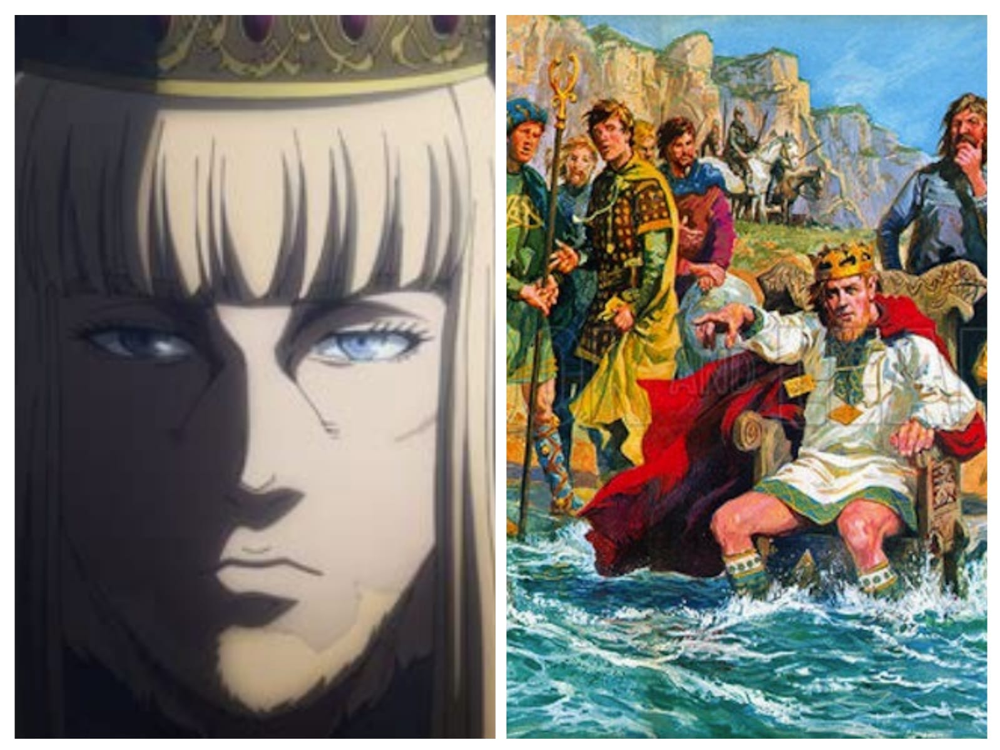

ᚱ Personagens
Thorfinn |
|
|---|---|
 Estatua de Thorfin e Personagem Thorfin |
Thorfinn Karlsefni (nascido por volta de 970) foi um explorador islandês que — por volta de 1010 — liderou uma expedição à Vinland, com a intenção de fundar um assentamento permanente. Ele viajou com três navios e cerca de 160 colonos, incluindo sua esposa Gudrid Thorbjarnardóttir Ainda na Vinland, Gudrid deu à luz seu filho Snorri Thorfinnsson — considerado o primeiro europeu nascido no “Novo Mundo”. A experiência não durou muito: há relatos de conflitos com os povos indígenas locais (chamados por eles de Skraelingar), o que contribuiu para o abandono da colônia. A localização precisa do assentamento original não é 100% certa — mas L'Anse aux Meadows permanece como a evidência arqueológica mais forte da presença nórdica na América. |
Canute |
|
|---|---|
|  Pintura de Canute perto do seu personagem |
Quem foi: Canute foi um monarca dinamarquês, nascido por volta de 994 ou 995. Governou Inglaterra, Dinamarca e Noruega. Ascensão ao poder: Era filho de Sweyn Forkbeard. Em 1015 liderou uma invasão à Inglaterra. Em 1016 tornou-se rei da Inglaterra. Em 1018 assumiu o trono da Dinamarca. Depois estendeu seu domínio sobre a Noruega. Governo e legado: Unificou Inglaterra, Dinamarca e Noruega no chamado Império do Mar do Norte. Buscou governar de forma estável, conciliando populações locais e tradições nórdicas. Morte: Morreu em 1035. Após sua morte, o império se fragmentou. Lenda famosa: Há um relato em que Cnut teria ordenado ao mar que recuasse para mostrar que nem mesmo um rei controla as forças da natureza. Importância histórica: Seu governo marca o auge da influência viking na Inglaterra. |
Leif |
|
|---|---|
 Estatua de Leif perto do seu personagem |
Quem foi: Leif Erikson foi um explorador nórdico nascido por volta de 970. É considerado o primeiro europeu conhecido a chegar à América do Norte. Origem: Era filho de Erik, o Vermelho, o colonizador da Groenlândia. Exploração de Vinland: Segundo as sagas, viajou para o oeste e chegou ao território chamado Vinland, hoje identificado como parte da América do Norte. Há evidências arqueológicas na região de L'Anse aux Meadows, no Canadá, que confirmam presença nórdica. Importância histórica: Representa o contato mais antigo conhecido entre europeus e o continente americano. Legado: É lembrado como um dos maiores exploradores da Era Viking. |